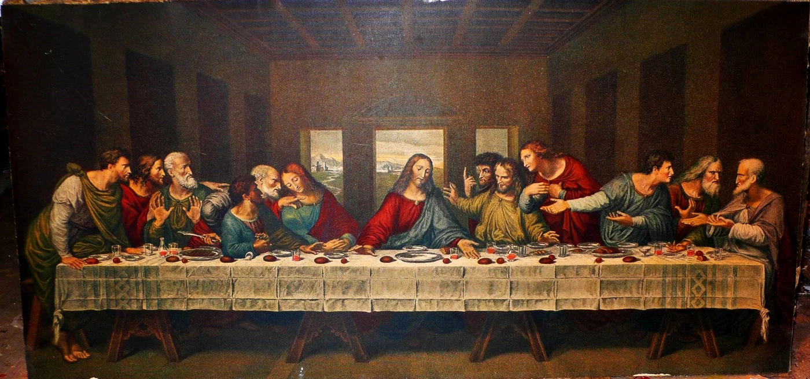
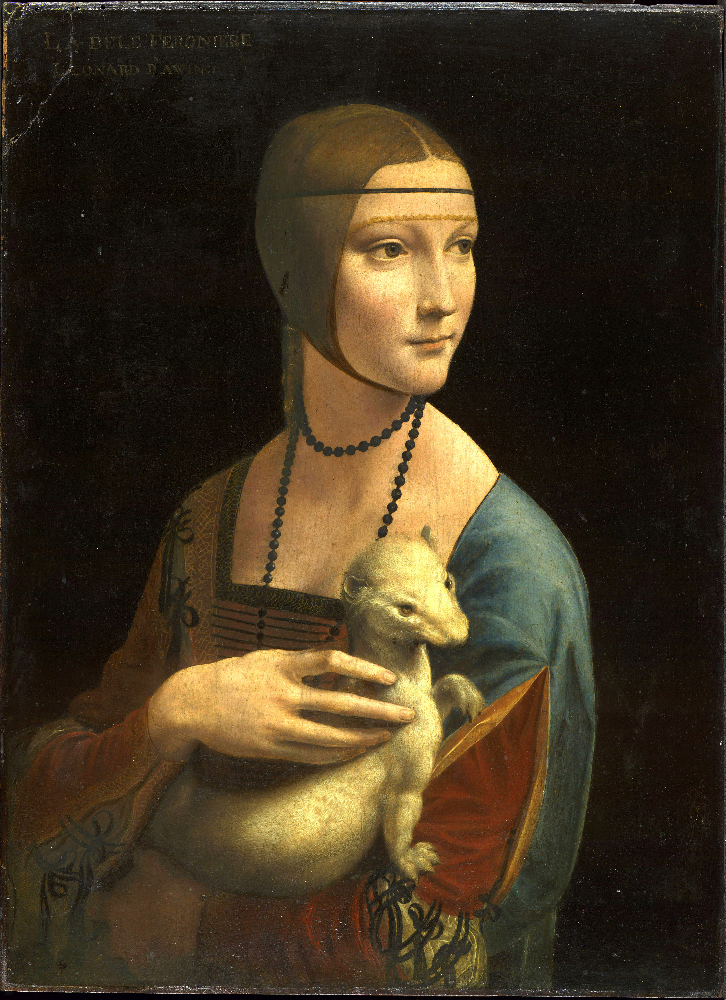

Picturile lui Leonardo da Vinci
1. Mona Lisa (Gioconda)

Pictat între anii 1503 și 1519, acest portret este cea mai faimoasă operă de artă din lume, expusă la Muzeul Luvru din Paris. Tabloul este celebru pentru zâmbetul enigmatic al femeii și pentru tehnica sfumato, prin care Leonardo a creat treceri foarte fine între lumină și umbră.
2. Cina cea de Taină

Această pictură murală uriașă din Milano surprinde exact momentul în care Iisus le spune apostolilor că unul dintre ei îl va trăda. Lucrarea impresionează prin expresiile dramatice ale celor doisprezece apostoli și prin perspectiva perfectă a încăperii.
3. Doamna cu hermina

Realizat în jurul anului 1489, tabloul o înfățișează pe tânăra Cecilia Gallerani ținând în brațe o hermină albă. Opera se remarcă prin naturalețea posturii și prin detaliile extrem de realiste ale blănii animalului și ale mâinii.